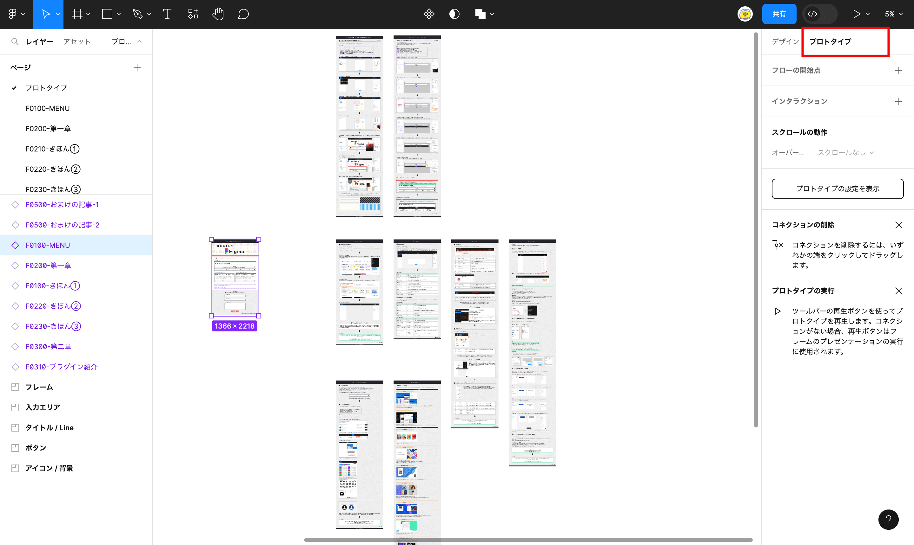
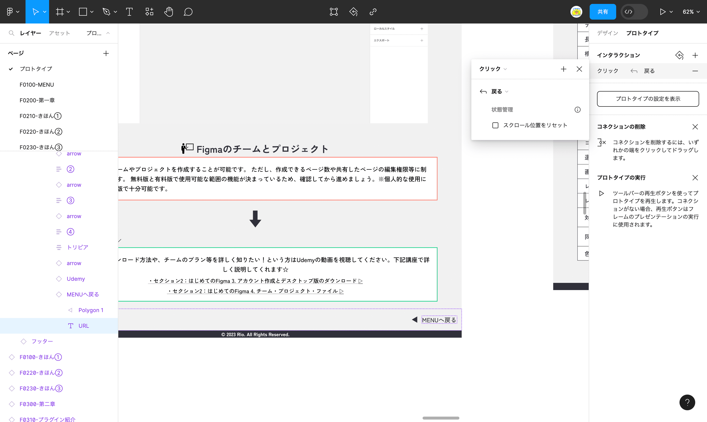
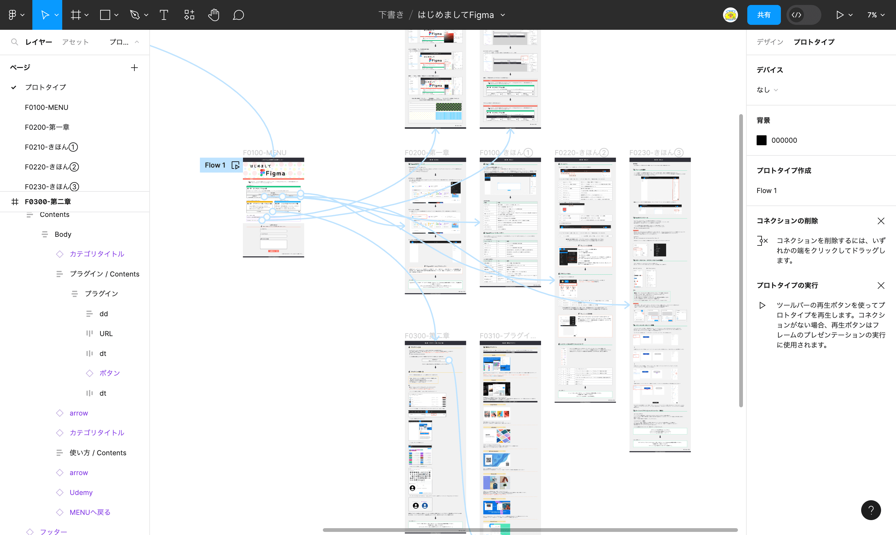

プロトタイプとは
プロトタイプとは作成したデザイン画面を使用して、画面遷移やインタラクション（双方向でのやり取り）を追加して実際の動きを試作できる機能です。※このボタンをクリックしたらこの画面に遷移するや、このボタンをクリックしたらメニューが表示される等々
トリガー：
ユーザが行う「クリック」や「ドラッグ」などのアクションを起こすきっかけ
アクション：
「画面遷移」や「再生」のような動作
これらを組み合わせて、プロトタイプを作成します！
ここではちょっとリアルなモックに見えるよう、おすすめのプロトタイプの使い方を紹介します。
プロトタイプの基本の使い方を知りたい方は下記をチェックしてください☆
⬇︎
プロトタイプの使い方
プロトタイプの基本となる設定方法を説明します。
方法：遷移
※前提：１つのページに遷移させたい画面を設置
①遷移元を選択＞デザインパネル＞プロトタイプを選択
②遷移先の画面を選択
①遷移元を選択＞デザインパネル＞プロトタイプを選択
⬇︎
②遷移先の画面を選択
遷移元から遷移先をドラッグandドロップで繋げる。または、入力モーダルに「クリック＞次に移動＞遷移先の画面を選択」で画面を繋げることが可能です。
例）例ではボタン押下で遷移させたいので、ボタンのフレームから該当の画面に遷移するよう設定しています
⬇︎
＼結果／ツールバーの再生ボタンを押下して確認
「はじめる」のボタン押下
前の画面へ戻る（遷移）設定方法を説明します。
方法：戻る
※前提：遷移元と遷移先を設定していること
①デザインパネル＞プロトタイプ＞設定したいフレームを選択
インタラクションを追加＞「クリック＞戻る」を選択
①デザインパネル＞プロトタイプ＞設定したいフレームを選択、インタラクションを追加＞「クリック＞戻る」を選択
例）例では「MENUへ戻る」に設定しました。MENUへ戻るボタン押下でMENU画面へ遷移します
⬇︎
＼結果／ツールバーの再生ボタンを押下して確認
「MENUへ戻る」のボタンを押下
全ての画像を繋げると下記のようになりました！
⬇︎
＼もっと詳しく／
プロトタイプの使い方をもっと詳しく知りたい！という方はUdemyの動画を視聴してください。
下記講座で詳しく説明してくれます☆